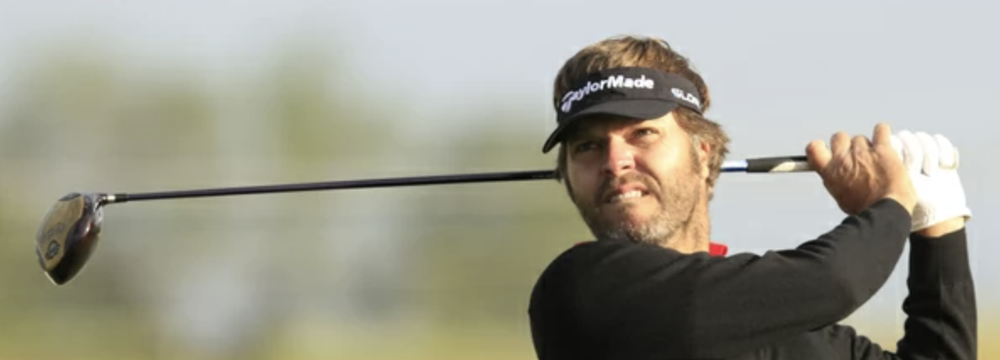

KIKUNINUS GOLF CLUB
Un club de golf para todos
Kikuninus Club de Golf es un club de golf fundado en 2004 por el jugador del European Tour José Manuel Lara. Su misión es fomentar el golf en la Comunidad Valenciana, ofreciendo a sus socios un ambiente de hermandad y compañerismo, así como una amplia gama de servicios y actividades.
Nuestros servicios
Clases de golf para todos los niveles, impartidas por profesores cualificados. Gestión de la licencia y el hándicap para que puedas disfrutar del golf sin complicaciones. Asesoramiento en la elección de palos para ayudarte a encontrar el equipo perfecto para ti. Recomendación de profesores o búsqueda de uno para ti, si lo necesitas.
Nuestra misión
Queremos que todos los amantes del golf puedan disfrutar de este deporte a precios asequibles. Por eso, desde la dirección del club negociamos con los diferentes campos para obtener los mejores precios para nuestros socios.
Únete a Kikuninus Club de Golf
Si quieres formar parte de una comunidad de golfistas apasionados, Kikuninus Club de Golf es el lugar perfecto para ti. ¡Contacta con nosotros y descubre todo lo que podemos ofrecerte!
Kikuninus Club de Golf: una historia de superación y éxito
En 2004, un grupo de aficionados al golf de Manises decidió fundar un club para dar a conocer este deporte en su ciudad. Eligieron el nombre "Kikuninus", un apelativo cariñoso en valenciano que significa "pequeñito". La razón era que José Manuel Lara, jugador profesional de golf de Manises y socio de honor del club, iba primero en el Open de Irlanda que se estaba disputando en "The K Club" el día de la fundación.
El club nació en la cancha de entrenamiento de golf propiedad de la familia Lara, y con su apoyo comenzó a dar sus primeros pasos. A lo largo de los años, muchos socios han pasado por el club, contribuyendo con su amor al golf y su esfuerzo a que la entidad siga adelante.
Uno de los logros deportivos más importantes del club es la consecución del título de campeona de España por parte de Celia Cuartero, una de sus jugadoras. Además, el club ha ganado el ranking de la Comunidad Valenciana y el Campeonato de la Federación de Golf de la Comunidad Valenciana a nivel de equipos.
Kikuninus Club de Golf es una historia de superación y éxito. Un grupo de aficionados al golf que decidieron crear un club para dar a conocer este deporte en su ciudad, y que han conseguido mantener la entidad a lo largo de los años, cosechando importantes logros deportivos.